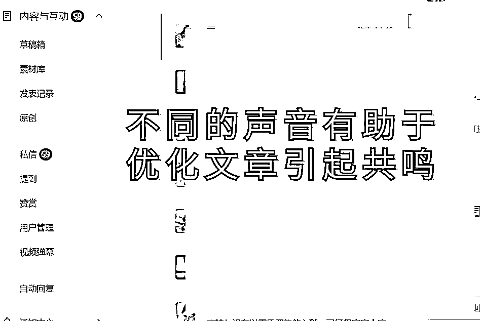
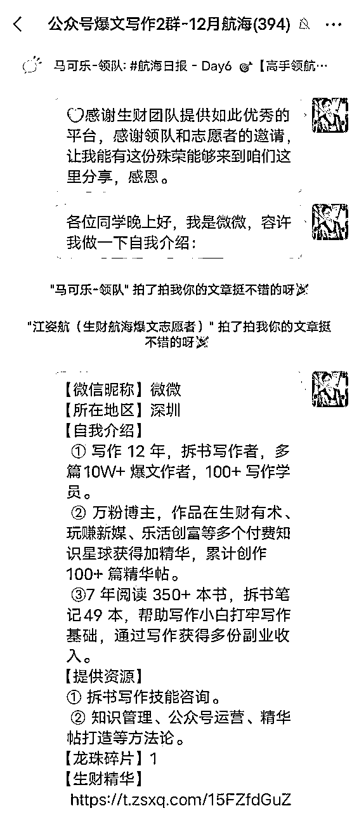

来源：https://eqc9f6vzuhv.feishu.cn/docx/GqPgdVtAZoTobBxixYmcYobUnZb
你好，我是微微，一名拆书写作者。在接触自媒体一年多的时间里，我由0人脉、0资源、0成绩、0基础，从公众号开始做起，直到知识星球、出写作课、社群运营、再到资料变现...
至今已经输出110W+字，创作多篇10W+爆文，累计获得100W+阅读量，在多个付费知识星球，累计创作出100+篇精华帖、指导100+写作小白变现。
其中，在12月的「公众号爆文写作（原创）」航海项目中，短短21天依靠流量主变现7000+，创作多篇原创10W+爆文、每天稳定3W+阅读，单号累计阅读量达到100W+的成绩。而且引流到私域100+人，后续还可以进行转化变现。（而且所写的一篇日志还被亦仁老师点赞了！）
短短的一年时间，可以完全改变一个人的状态和未来，即使你出身平凡、能力平庸，关键在于有没有“执行”的决心，以及“坚持”的耐力。一路以来的试错，并不会浪费时间，只要还在路上，那么总能遇见曙光。曾经经历的一切，就是当下迎来爆发的最佳跳板。
那为什么我说公众号爆文写作（原创），是新人小白最好的出发点呢？
因为它不需要太多过硬的技巧、知识与经验，我以自身已经跑通的成绩与你共享：做原创爆文需要的一切。
只要开始执行，以积极的心态去面对所遇到的一切阻碍，兵来将挡、水来土掩，不出三个月，你肯定也能做到我这样的成绩。
微微之所以能够在21天内稳定每天保持3W+阅读量，个人认为最关键的或许不是写作能力，也不是素材有多么优质，最主要是找准了爆文具备的三点核心要素。
有接触过销售的应该对基础的一点不会感到陌生，也就是你要成功地把产品卖出去，首先就得知道这个地方欢迎什么类型的产品，以及找到对这个产品有刚需的人群，也就是受众群体。
那我们转换成写作的角度去理解一下：
目前你所擅长的东西、你所交付的东西、你所能给予对方的东西、你打算深耕哪方面领域的文章，这些都决定了你的受众群体是哪些类型。
首先爆文写作是非常考验一个人的耐心、持久输出能力的，如果单纯是不断追热点、追爆款的话，那么你在创作过程中会越来越累、输出也会变得不再丝滑。
其次是没有吸引到对你感兴趣的读者留在你的公众号里（关注你）的话，你每一次创作的文章基本上都会是在拼运气、拼概率，费时费力且会非常被动。
比如，如果你擅长写的文章类型是关于母婴、婚姻相处之道的内容，而你的受众群体是大学生或者职场小白，那有可能会得到互动数据、有可能会被得到推荐吗？
我们在航海手册中也能学习到，发送文章后所收到的第一反馈，基本决定了系统是否会推荐你这篇文章。因此，抓紧以上这两点尤为重要。
方法如下：
这里有几点可以参考：
如此一来，只要围绕中老年人群体的角度出发，去找到一些能够与他们产生联系的话题、选题、内容，就可以大幅提升这篇文章的互动数据，也能增加隐性的推荐概率。
咱在问一问上0成本让视频号涨粉2000+，也是运用了类似这样的原理，在生财有术这篇帖子有说明哈：
《涨粉2000+！关于「微信问一问」的几点实操心得分享》
爆文基本上就是靠文章插入的广告，吸引读者点击从而得到流量主收入，以此来作为最直接的变现方式。那么除了要写出垂直人群喜欢的文章类型以外，选择什么广告类型也非常重要。
这里咱们可以点进去进行筛选，我们按照以上的故事文为例子，一般选择图二的类型就足够了，毕竟是中老年人群体：
都说标题是50%决定一篇文章是否能成为爆款的关键，而微微个人认为标题决定了不止50%，说是70%也不为过，甚至80%也不为过。
文章内容写的再好，没有人打开也是白忙碌一场，它既决定了打开率，也会对完读率造成一定的影响。具体的拟标题方式在咱们的航海手册已经说的足够清晰，这里就不重复啦。
不过，咱在写标题的时候，用了比较新颖的一点方法，那是读者思维。
这里的读者（用户）思维，指的是以作者的视觉与读者的视觉交织在一起，找到两者之间的交集圈，以此作为基础进行思考延伸。
也就是俗称的找到“痛点”。因为读者都不喜欢说教式的信息，所以你的标题最好是避开“教师”风格的输出，采用“医生”的角度去说明。
因为人性总是会第一时间的保护自己，所以外界的刺激最好不是给他说教，而是告诉他这样做的危害性，或者建议他避开错误的方法，比如：
像是反差、异常、金钱、数字、畏惧、好奇、疑问这几点因素就非常好用，基本上使用2个以上的搭配，那篇文章都可以预定破1W的阅读。
很多时候，你并不是写不好，也不是学不会，更不是没有创作爆文的能力，而是你太追求完美，或者说太没有耐心了。
想要写出一篇爆文，首先就不能有“内容至上”这一点想法，总想着要写的有深度、非常让人深思，要能够突出自己的文笔水平...
微微个人认为，这一点是不少写作者的固定印象：文章肯定是要写得非常优质，才能够引起更多人的关注，才能够引发长尾流量。
事实上，目前公众号的读者水平80%处于初中水平，无论男女老少，所以太过高深的文章内容，并不能引起太多的共鸣，反而会劝退绝大部分的读者。
因此，前期还没有进池的阶段，你只需要用大白话去概括整篇文章，进池以后再考虑把文章润色的有理有据一些即可，不用过多加入需要思考、有内涵的内容。
因此，谨记以下三点：
（1）先完成
反过来思考也就是不追求完美，比起思索复杂的过滤方法，不如采取最直接、最基本的方法：按照日常交流的口水文形式进行输出。
也就是主打一个及时、生动，而不是追求逻辑通畅、知识点鲜明的完美。
只要想到什么就写什么，先写下来，把口水文形式的对话内容记录下来，再适当修改调整一下文字，那一篇初稿的内容就完成了。
（2）再完美
初稿完成的时候，用心阅读一遍后其实都不难发现，我们都会把自己真实的经历、真实的想法写在里面，也就是掺入太多自嗨因素。
这时候可以简单地给自己树立起双面性的观点，也就是把内心的两个声音放出来：一个不断对文章进行挑刺，另一个肯定你的内容。
这就像是你在与一位受众群体面对面地进行交流，让他通过侧面给你更多完善的建议。
（3）改稿
一篇文章没有经历过改稿，都不算是一篇好文章，更提不上有可能成为爆文，比起刚开始的删减修改，这时候从头到尾的修改才是灵魂所在。
改稿的技巧非常多，这里主要分享几点给小伙伴们去搜索学习哈，比如：
1.5w2h梳理逻辑;
2.从理性角度去删掉或改编口水话；
3.适当分段与调整情节；
4.加入自身的故事或者其他案例说明；
5.运用影视剧画面感的表达，加入移动式画面的说明；
6.比喻句、修改错别字等等。
搞懂了爆文的底层逻辑以后，也就是掌握心法以后，接下来就是实战了，如果你没有以下的技能，那就不该匆匆忙忙入场。
因为空有满腔热血进入爆文写作，即使你能够日更100天输出，也有很大概率会成为炮灰。
经常会出现误把写作认为是随笔、碎碎念、随心所欲抒发情感的小伙伴，以至于输出大量的文字，也不知道自己到在写什么，从而不断重复一个结果：
一顿操作行云流水，回头一看阅读也才25。
但是小白的痛楚就在这里：写作基础不扎实，没有过硬的思维能力、知识管理体系。因此微微在这里分享你一点“速成”的写作方法助你在小白阶段也能开始公众号爆文写作（原创）的实战：简单描述法。
这个方法算是“流水账”文章的前身。即使前言不搭后语，也不用管语法、语句、框架、格式、顺序等，直接把目前脑海里的话写下来。
写下来的想法包括但不限于选题、碎碎念、一闪而过的灵感等，只要结合以上关于公众号爆文的底层逻辑去思考，想到什么就写什么。
因为有了内容，就能够针对内容进行优化，无法动笔的情况也会大幅减少，往往有时候一篇流水账里就藏有爆款因子，咱有一篇10W＋就是这么来的。
举个例子：
一样方法百样通，尝试一下吧。
思维能力是我们能够整合所有的信息，从而输出高质量内容的关键，也就是写出爆款的首发系统。
可是不少人常常因为思维不够活跃、脑筋不够灵活而无法妥善完成工作，以至于把问题归咎于天赋、资源、人脉等，却从未想过一个最基本的常识。
大部分人，都是和你一样的普通人。
如果不懂得怎么训练自己的思维，微微在之前生财有术的这篇帖子里也有分享怎么锻炼哈：
《学历高≠写作强，这5点才是学会写作的关键》
素材是整篇文章的核心，但是谁又知道爆文的素材可以在哪里找到呢？除了对标账号以外，还有别的地方能够找到吗？航海里说的今日头条、微信看一看、抖音等平台我都找过了，可是还是不懂得怎么运用素材啊...
这是一个小白在做爆文项目的时候，一定会出现的常见问题。
我刚开始也陷入过这一个误区里，在阅读了航海的爆文手册、星球里的帖子后，几乎无一例外都指向今日头条、知乎、微信看一看这三个平台，找对标、找爆过的文章拆解等。
后来我意识到，再好的素材就算拆解的再透彻，只要自己还是保持旁观者的角度去看待，那么就很难产出能够引起共鸣的文章，也就很难有10W+的诞生。
所以我用了一个比较新颖的方法：代入角色。
这应该是很少听到，甚至没听过的做法，它需要你有一定的共情能力、感性思维，以及足够强的想象力。也可以换句话说：中二一点。
（1）正面代入
每次在今日头条、微信看一看找到对标的账号或者文章，我都会把自己代入到他文章里相关的角色中，比如说前不久写的一篇文章素材：《富爸爸穷爸爸》。
以第一主人公清琦的视觉角度去看内容，在脑海里体验相关角色所经历的事情，会有很多情绪、感受等冒上心头。
比如刚开始学习「收益表」和「资产负债表」的时候，作为一名初次接触的初学者，我该怎么去理解，房子是负债而不是收入呢？
（1）因为自己住没收益，会贬值。
（2）因为房子需要翻新、装修，也会随着年龄而掉价。
（3）因为需要背负贷款，需要不断地支出。
...
那我该怎么去得到「资产负债表」里的收入呢，看着股票、债券、基金等，我是不是既期待又有些畏惧未知的事物呢，为什么期待和畏惧？
想象当时的情景和画面，对眼前指导自己的“富爸爸”发出提问：
问：我觉得这样的收入是需要承担风险的，还是房子比较保值实在吧？毕竟可以转手卖出去。
答：亏本的收入，就是负债，按照这一点基础去思考。
问：那我该怎么去取得这些收益，而不是错过它呢？
答：你可以选择贷款去购买房地产，或者能够升值的东西，比如...
又或者像是《流浪地球》，如果我是男主角刘启，在最后一刻看到所有人都掉头回来帮忙时，会有什么感受？
感动、激动、充满力量、积极、热血、自信、团结、人性等等，这些关键词就冒出来了，根据关键词可以引申的选题方向、素材内容，也可以根据第一点延伸出来。
比如核心内容：人性
选题：
（1）危急时刻，人人都是英雄。
（2）不要透过表面去看本质，人性终究是善良。
...
素材：
（1）在灾难当前，每个曾经放弃过的人都重新跑回来了。
（2）他没有帮助他，是因为知道他需要的并不是金钱。
...
（2）反面代入
这是一个更为新颖的方法，你可以尝试代入正面形象的主角视角，然后用反派的心理在想象中把整部电影进行改编。
比如上述像是流浪地球的刘启，在关键时候不是选择呼唤其他人回来帮忙，而是缓慢地说出一句话：事情好像变得有趣起来了。
猜测反派在重要关头的做法，想象更多不一样的场景或者电影改编的可能性，又是一番不一样的感受，把素材内容变得更加有趣。
通过这个方法，也让我产出了一篇20W+的文章。同样，这个制造素材的方法我也在生财有术写过比较全面的帖子：《写作秘诀，学会自制源源不断的素材》
尽管以上也分享了关于必修技能的锻炼方式，但是一定会有小伙伴在短时间内是学不来的，而这个时候又想要通过爆文取得正反馈的话：
所以微微特地分享给大家一个“人工工具”，在写作润色上可谓是一流且高效：微式拆书写作法。
以下分享简化版的过程：
1.开篇
通过一本书的封面背页、简介、引言三点，把这本书主要的核心关键词提炼出来，组成100字的概括。
这里没有具体的标准，但是有简单的两点核心要素：
一是文字表达一定要简洁、不拖沓、让人一目了然，一眼扫过去就知道在说什么；
二是要能够调动起读者的情绪，可以参考航海手册的爆款标题和套路，称之为开幕雷击。
比如像是干货书籍的拆解，那么开篇内容便可以用痛击读者的痛点开始，再以痒点作为切入点，这里以拆书写作为例子：
标题：《为什么你30岁还赚不到钱，因为你不会“拆”》
开篇：今天我要分享你一个价值五位数的写作方法，让你的写作水平在短短几小时内得到质的飞跃，先点赞收藏我的这篇内容，以免以后找不到了...
这样读起来，会让读者有一种想要追下去看完整篇文章的冲动，也就是让他们产生好奇、渴望、期待的心情，呼应了前文提到的“悬念”因素。
2.正文
通过总分总的结构，省去书中的过渡内容，从中挖掘出关键强调的观点拆解，再用自己的话进行复述。
何为总分总结构呢，这是咱最擅长的写作结构，一般市面上的官方解释是类似这样的：“总”就是文章的总起或总结，是文章的中心思想。“分”指的是分层叙述。
“总分总”的结构就是先抛出文章的中心思想，再分层叙述，逐层深入，最后对文章加以总结。事实上你只要记住这一句话就可以：以一个主题为核心，分成几个小点围绕它进行分点说明即可。
一般而言，书中的知识很多时候只是潜藏在一句话里，其他的文字都是为了诠释意思而做出的“碎碎念”，方便理解而已。
那我们就可以在每个小节中找出关键的一句话，从中用自己的话进行揣摩、复述，即可得到简洁有力的正文。字数也不需要多，两三百字即可。
3.总结
把全文最主要的3-5个重点内容，通过侧面角度的观点进行升华，再结合自身的观点给出少量的个人观点。
整理出重点并不难，输出个人观点也不难，关键是侧面角度是什么意思：其实也就是以读者的角度去感受内容，以期待的视角去表达读后感。
既能避免拆出来的知识点过于单调，也能避免说出来的意思过于笼统或个人主义。
通过这样简单的方式去拆出书中的内容，结合搜索到的素材，把拆出来的知识融入之前的流水账文章，润色也就是不到半小时的操作。
思维能力除了能够用以上的方法锻炼以外，其实借助AI工具也是一个刺激思维的有效方法，像是文心一言、火山写作、通义千问、GPT...
不过随着写作能力的提升，最好是把AI当做偶尔发散思维的工具，而不要形成过度的依赖性。
这是一个非常有意思的点，相信不少做爆文的小伙伴也有尝试过，那咱这里就不做重复说明，只是让更多圈友知道还可以这么操作：
公众号爆文写作（原创）其实不仅限于找到对标账号、挖掘爆款文章进行借鉴参考，在原创这方面应该更多借助于“真实的反馈”。
创作爆文内容，这里有两点可以参考：

像是咱就凭借后台读者的骂声、建议声，写出了多篇破万阅读量、破5W阅读量的爆文。至于怎么根据他们的反馈去改写，我们可以采用航海手册里的指引去做。
或许我们始终都会担心：
写了一个月了没有水花怎么办？
不会运用GPT去产出高质量的文章，该怎么调整？
感觉群里的小伙伴都在报喜，就我一个人做不好，我还该怎么坚持下去？
写了2个小时以后，收入才个位数怎么办？...
微微希望你能记得这么一句话：成功一定是需要一个成长的过程，当你遇到的坑足够多，当你填坑的经验足够丰富，你距离成功也就一尺之遥。
写了很久没成绩，那换一个领域再写；
不会用GPT工具，那先用2个小时去看演示操作；
别人在报喜，那下一个就是我...
也许我们会不断遭受打击，也许我们无法在短期内出成绩，也许我们需要比其他人付出更多的时间精力。
但是按照正确的方法（航海手册），走在正确的路上（生财航海群），你就永远不用担心会走错，属于你的高光时刻肯定会到来。

人嘛，总得怀有希望。
微微一路以来的经历，已经成为我不断向上的“升级之路”，我也坚信将来的自己可以闪闪发光，写出10W+、100W+、1000W+的爆款文章！
【相信自己，是成功的第一步】。把想要放弃的心情换做是“我改”的行动，你会发现自己在未来的每一天：都会充满期待与希望。
（彩蛋：又留心的小伙伴应该看到了微微分享里的错别字，还有用错的成语。这也是爆文的一个小tips，在文章里故意这么做，你看互动数据不就来了吗？）
最后再次感谢生财团队提供的航海项目，感谢领队和志愿者的认可，祝福各位同学在新的一年里，通过公众号爆文写作（原创），赚它一个六位数、七位数、八位数，收获自己的第一桶金！
2024新春，微微向各位圈友拜个晚年，祝愿身体健康！家庭幸福！新春快乐！